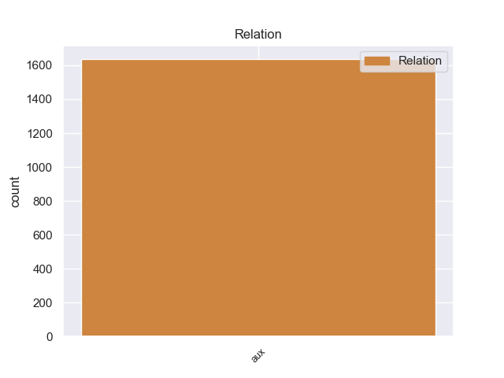
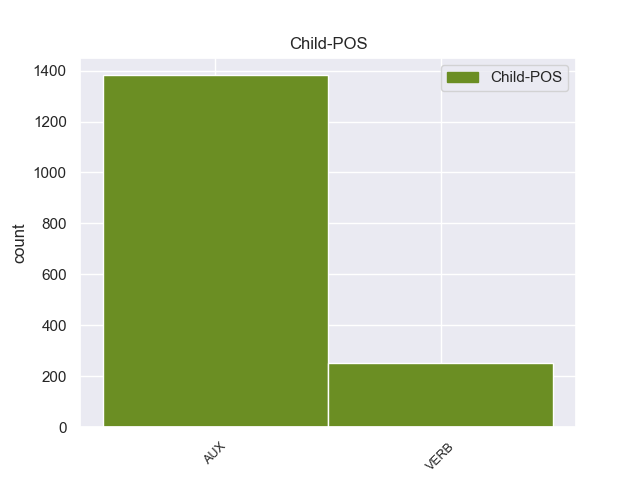

Distribution of features within this leaf



Agreement Rules sorted by frequency.
- When the dependent token is the auxiliary(aux) of the head token, and the dependent token is AUX.
1 El _ _ _ _ 0 _ _ _
2 mismo _ _ _ _ 0 _ _ _
3 investigador _ _ _ _ 0 _ _ _
4 ha haber AUX _ Mood=Ind|Number=Sing|Person=3|Tense=Pres|VerbForm=Fin 5 aux _ _
5 informado informador VERB _ Mood=Ind|Number=Sing|Person=3|Tense=Pres|VerbForm=Fin 0 _ _ _
6 recientemente _ _ _ _ 0 _ _ _
7 de _ _ _ _ 0 _ _ _
8 el _ _ _ _ 0 _ _ _
9 primer _ _ _ _ 0 _ _ _
10 caso _ _ _ _ 0 _ _ _
11 documentado _ _ _ _ 0 _ _ _
12 de _ _ _ _ 0 _ _ _
13 una _ _ _ _ 0 _ _ _
14 plaga _ _ _ _ 0 _ _ _
15 resistente _ _ _ _ 0 _ _ _
16 a _ _ _ _ 0 _ _ _
17 el _ _ _ _ 0 _ _ _
18 algodón _ _ _ _ 0 _ _ _
19 transgénico _ _ _ _ 0 _ _ _
20 . _ _ _ _ 0 _ _ _
1 " _ _ _ _ 0 _ _ _
2 Tenemos tenemos VERB _ Mood=Ind|Number=Sing|Person=3|Tense=Pres|VerbForm=Fin 0 _ _ _
3 todo _ _ _ _ 0 _ _ _
4 listo _ _ _ _ 0 _ _ _
5 , _ _ _ _ 0 _ _ _
6 la _ _ _ _ 0 _ _ _
7 venta _ _ _ _ 0 _ _ _
8 de _ _ _ _ 0 _ _ _
9 boletos _ _ _ _ 0 _ _ _
10 será srár VERB _ Mood=Ind|Number=Sing|Person=3|Tense=Pres|VerbForm=Fin 2 aux _ _
11 a _ _ _ _ 0 _ _ _
12 partir _ _ _ _ 0 _ _ _
13 de _ _ _ _ 0 _ _ _
14 mañana _ _ _ _ 0 _ _ _
15 de _ _ _ _ 0 _ _ _
16 8 _ _ _ _ 0 _ _ _
17 am _ _ _ _ 0 _ _ _
18 a _ _ _ _ 0 _ _ _
19 3 _ _ _ _ 0 _ _ _
20 pm _ _ _ _ 0 _ _ _
21 , _ _ _ _ 0 _ _ _
22 la _ _ _ _ 0 _ _ _
23 afición _ _ _ _ 0 _ _ _
24 de _ _ _ _ 0 _ _ _
25 el _ _ _ _ 0 _ _ _
26 Real _ _ _ _ 0 _ _ _
27 España _ _ _ _ 0 _ _ _
28 podrá _ _ _ _ 0 _ _ _
29 comprar _ _ _ _ 0 _ _ _
30 en _ _ _ _ 0 _ _ _
31 el _ _ _ _ 0 _ _ _
32 Banco _ _ _ _ 0 _ _ _
33 Continental _ _ _ _ 0 _ _ _
34 , _ _ _ _ 0 _ _ _
35 frente _ _ _ _ 0 _ _ _
36 a _ _ _ _ 0 _ _ _
37 el _ _ _ _ 0 _ _ _
38 estadio _ _ _ _ 0 _ _ _
39 Morazán _ _ _ _ 0 _ _ _
40 , _ _ _ _ 0 _ _ _
41 se _ _ _ _ 0 _ _ _
42 han _ _ _ _ 0 _ _ _
43 puesto _ _ _ _ 0 _ _ _
44 a _ _ _ _ 0 _ _ _
45 la _ _ _ _ 0 _ _ _
46 venta _ _ _ _ 0 _ _ _
47 800 _ _ _ _ 0 _ _ _
48 boletos _ _ _ _ 0 _ _ _
49 , _ _ _ _ 0 _ _ _
50 500 _ _ _ _ 0 _ _ _
51 en _ _ _ _ 0 _ _ _
52 sol _ _ _ _ 0 _ _ _
53 y _ _ _ _ 0 _ _ _
54 300 _ _ _ _ 0 _ _ _
55 en _ _ _ _ 0 _ _ _
56 preferencia _ _ _ _ 0 _ _ _
57 , _ _ _ _ 0 _ _ _
58 la _ _ _ _ 0 _ _ _
59 boletería _ _ _ _ 0 _ _ _
60 de _ _ _ _ 0 _ _ _
61 el _ _ _ _ 0 _ _ _
62 España _ _ _ _ 0 _ _ _
63 está _ _ _ _ 0 _ _ _
64 ya _ _ _ _ 0 _ _ _
65 identificada _ _ _ _ 0 _ _ _
66 con _ _ _ _ 0 _ _ _
67 el _ _ _ _ 0 _ _ _
68 escudo _ _ _ _ 0 _ _ _
69 de _ _ _ _ 0 _ _ _
70 el _ _ _ _ 0 _ _ _
71 equipo _ _ _ _ 0 _ _ _
72 y _ _ _ _ 0 _ _ _
73 con _ _ _ _ 0 _ _ _
74 el _ _ _ _ 0 _ _ _
75 color _ _ _ _ 0 _ _ _
76 amarillo _ _ _ _ 0 _ _ _
77 " _ _ _ _ 0 _ _ _
78 , _ _ _ _ 0 _ _ _
79 comentó _ _ _ _ 0 _ _ _
80 Rolin _ _ _ _ 0 _ _ _
81 . _ _ _ _ 0 _ _ _
Disagree Examples:
1 A _ _ _ _ 0 _ _ _
2 la _ _ _ _ 0 _ _ _
3 organización _ _ _ _ 0 _ _ _
4 de _ _ _ _ 0 _ _ _
5 conferencias _ _ _ _ 0 _ _ _
6 , _ _ _ _ 0 _ _ _
7 la _ _ _ _ 0 _ _ _
8 edición _ _ _ _ 0 _ _ _
9 de _ _ _ _ 0 _ _ _
10 diferentes _ _ _ _ 0 _ _ _
11 publicaciones _ _ _ _ 0 _ _ _
12 relacionadas _ _ _ _ 0 _ _ _
13 con _ _ _ _ 0 _ _ _
14 el _ _ _ _ 0 _ _ _
15 medio _ _ _ _ 0 _ _ _
16 natural _ _ _ _ 0 _ _ _
17 y _ _ _ _ 0 _ _ _
18 la _ _ _ _ 0 _ _ _
19 firma _ _ _ _ 0 _ _ _
20 de _ _ _ _ 0 _ _ _
21 convenios _ _ _ _ 0 _ _ _
22 con _ _ _ _ 0 _ _ _
23 diferentes _ _ _ _ 0 _ _ _
24 administraciones _ _ _ _ 0 _ _ _
25 para _ _ _ _ 0 _ _ _
26 la _ _ _ _ 0 _ _ _
27 recuperación _ _ _ _ 0 _ _ _
28 , _ _ _ _ 0 _ _ _
29 mejora _ _ _ _ 0 _ _ _
30 y _ _ _ _ 0 _ _ _
31 divulgación _ _ _ _ 0 _ _ _
32 de _ _ _ _ 0 _ _ _
33 el _ _ _ _ 0 _ _ _
34 entorno _ _ _ _ 0 _ _ _
35 , _ _ _ _ 0 _ _ _
36 se _ _ _ _ 0 _ _ _
37 ha haber AUX _ Mood=Ind|Number=Sing|Person=3|Tense=Pres|VerbForm=Fin 38 aux _ _
38 sumado sumar VERB _ Gender=Masc|Number=Sing|Tense=Past|VerbForm=Part 0 _ _ _
39 la _ _ _ _ 0 _ _ _
40 creación _ _ _ _ 0 _ _ _
41 de _ _ _ _ 0 _ _ _
42 un _ _ _ _ 0 _ _ _
43 centro _ _ _ _ 0 _ _ _
44 específico _ _ _ _ 0 _ _ _
45 de _ _ _ _ 0 _ _ _
46 educación _ _ _ _ 0 _ _ _
47 y _ _ _ _ 0 _ _ _
48 divulgación _ _ _ _ 0 _ _ _
49 ambiental _ _ _ _ 0 _ _ _
50 para _ _ _ _ 0 _ _ _
51 todos _ _ _ _ 0 _ _ _
52 los _ _ _ _ 0 _ _ _
53 públicos _ _ _ _ 0 _ _ _
54 . _ _ _ _ 0 _ _ _
1 En _ _ _ _ 0 _ _ _
2 este _ _ _ _ 0 _ _ _
3 momento _ _ _ _ 0 _ _ _
4 , _ _ _ _ 0 _ _ _
5 expuso _ _ _ _ 0 _ _ _
6 , _ _ _ _ 0 _ _ _
7 están _ _ _ _ 0 _ _ _
8 en _ _ _ _ 0 _ _ _
9 duda _ _ _ _ 0 _ _ _
10 las _ _ _ _ 0 _ _ _
11 ideas _ _ _ _ 0 _ _ _
12 conservadoras _ _ _ _ 0 _ _ _
13 que _ _ _ _ 0 _ _ _
14 se _ _ _ _ 0 _ _ _
15 han haber AUX _ Mood=Ind|Number=Plur|Person=3|Tense=Pres|VerbForm=Fin 16 aux _ _
16 aplicado aplicar VERB _ Gender=Masc|Number=Sing|Tense=Past|VerbForm=Part 0 _ _ _
17 en _ _ _ _ 0 _ _ _
18 México _ _ _ _ 0 _ _ _
19 , _ _ _ _ 0 _ _ _
20 debido _ _ _ _ 0 _ _ _
21 a _ _ _ _ 0 _ _ _
22 los _ _ _ _ 0 _ _ _
23 resultados _ _ _ _ 0 _ _ _
24 económicos _ _ _ _ 0 _ _ _
25 y _ _ _ _ 0 _ _ _
26 los _ _ _ _ 0 _ _ _
27 abusos _ _ _ _ 0 _ _ _
28 de _ _ _ _ 0 _ _ _
29 intermediarios _ _ _ _ 0 _ _ _
30 financieros _ _ _ _ 0 _ _ _
31 . _ _ _ _ 0 _ _ _
1 En _ _ _ _ 0 _ _ _
2 declaraciones _ _ _ _ 0 _ _ _
3 a _ _ _ _ 0 _ _ _
4 los _ _ _ _ 0 _ _ _
5 periodistas _ _ _ _ 0 _ _ _
6 , _ _ _ _ 0 _ _ _
7 el _ _ _ _ 0 _ _ _
8 alcalde _ _ _ _ 0 _ _ _
9 Elche _ _ _ _ 0 _ _ _
10 y _ _ _ _ 0 _ _ _
11 también _ _ _ _ 0 _ _ _
12 vicesecretario _ _ _ _ 0 _ _ _
13 general _ _ _ _ 0 _ _ _
14 de _ _ _ _ 0 _ _ _
15 el _ _ _ _ 0 _ _ _
16 PSPV _ _ _ _ 0 _ _ _
17 - _ _ _ _ 0 _ _ _
18 PSOE _ _ _ _ 0 _ _ _
19 ha haber AUX _ Mood=Ind|Number=Sing|Person=3|Tense=Pres|VerbForm=Fin 20 aux _ _
20 manifestado manifestar VERB _ Gender=Masc|Number=Sing|Tense=Past|VerbForm=Part 0 _ _ _
21 que _ _ _ _ 0 _ _ _
22 , _ _ _ _ 0 _ _ _
23 " _ _ _ _ 0 _ _ _
24 evidentemente _ _ _ _ 0 _ _ _
25 " _ _ _ _ 0 _ _ _
26 , _ _ _ _ 0 _ _ _
27 Amorós _ _ _ _ 0 _ _ _
28 " _ _ _ _ 0 _ _ _
29 seguirá _ _ _ _ 0 _ _ _
30 formando _ _ _ _ 0 _ _ _
31 parte _ _ _ _ 0 _ _ _
32 de _ _ _ _ 0 _ _ _
33 el _ _ _ _ 0 _ _ _
34 grupo _ _ _ _ 0 _ _ _
35 socialista _ _ _ _ 0 _ _ _
36 " _ _ _ _ 0 _ _ _
37 en _ _ _ _ 0 _ _ _
38 el _ _ _ _ 0 _ _ _
39 ayuntamiento _ _ _ _ 0 _ _ _
40 ilicitano _ _ _ _ 0 _ _ _
41 . _ _ _ _ 0 _ _ _
1 A _ _ _ _ 0 _ _ _
2 imitación _ _ _ _ 0 _ _ _
3 de _ _ _ _ 0 _ _ _
4 el _ _ _ _ 0 _ _ _
5 general _ _ _ _ 0 _ _ _
6 Erich _ _ _ _ 0 _ _ _
7 Ludendorff _ _ _ _ 0 _ _ _
8 , _ _ _ _ 0 _ _ _
9 antiguo _ _ _ _ 0 _ _ _
10 comandante _ _ _ _ 0 _ _ _
11 en _ _ _ _ 0 _ _ _
12 jefe _ _ _ _ 0 _ _ _
13 de _ _ _ _ 0 _ _ _
14 el _ _ _ _ 0 _ _ _
15 Ejército _ _ _ _ 0 _ _ _
16 alemán _ _ _ _ 0 _ _ _
17 ( _ _ _ _ 0 _ _ _
18 y _ _ _ _ 0 _ _ _
19 que _ _ _ _ 0 _ _ _
20 por _ _ _ _ 0 _ _ _
21 lo _ _ _ _ 0 _ _ _
22 demás _ _ _ _ 0 _ _ _
23 era _ _ _ _ 0 _ _ _
24 su _ _ _ _ 0 _ _ _
25 primo _ _ _ _ 0 _ _ _
26 carnal _ _ _ _ 0 _ _ _
27 ) _ _ _ _ 0 _ _ _
28 , _ _ _ _ 0 _ _ _
29 von _ _ _ _ 0 _ _ _
30 Hutier _ _ _ _ 0 _ _ _
31 sostuvo _ _ _ _ 0 _ _ _
32 la _ _ _ _ 0 _ _ _
33 tesis _ _ _ _ 0 _ _ _
34 de _ _ _ _ 0 _ _ _
35 que _ _ _ _ 0 _ _ _
36 el _ _ _ _ 0 _ _ _
37 ejército _ _ _ _ 0 _ _ _
38 alemán _ _ _ _ 0 _ _ _
39 no _ _ _ _ 0 _ _ _
40 había haber AUX _ Mood=Ind|Number=Sing|Person=3|Tense=Imp|VerbForm=Fin 42 aux _ _
41 sido _ _ _ _ 0 _ _ _
42 derrotado derrotar VERB _ Gender=Masc|Number=Sing|Tense=Past|VerbForm=Part 0 _ _ _
43 en _ _ _ _ 0 _ _ _
44 los _ _ _ _ 0 _ _ _
45 campos _ _ _ _ 0 _ _ _
46 de _ _ _ _ 0 _ _ _
47 batalla _ _ _ _ 0 _ _ _
48 por _ _ _ _ 0 _ _ _
49 los _ _ _ _ 0 _ _ _
50 Aliados _ _ _ _ 0 _ _ _
51 sino _ _ _ _ 0 _ _ _
52 que _ _ _ _ 0 _ _ _
53 , _ _ _ _ 0 _ _ _
54 por _ _ _ _ 0 _ _ _
55 el _ _ _ _ 0 _ _ _
56 contrario _ _ _ _ 0 _ _ _
57 , _ _ _ _ 0 _ _ _
58 había _ _ _ _ 0 _ _ _
59 recibido _ _ _ _ 0 _ _ _
60 una _ _ _ _ 0 _ _ _
61 " _ _ _ _ 0 _ _ _
62 puñalada _ _ _ _ 0 _ _ _
63 por _ _ _ _ 0 _ _ _
64 la _ _ _ _ 0 _ _ _
65 espalda _ _ _ _ 0 _ _ _
66 " _ _ _ _ 0 _ _ _
67 a _ _ _ _ 0 _ _ _
68 manos _ _ _ _ 0 _ _ _
69 de _ _ _ _ 0 _ _ _
70 unos _ _ _ _ 0 _ _ _
71 presuntos _ _ _ _ 0 _ _ _
72 enemigos _ _ _ _ 0 _ _ _
73 interiores _ _ _ _ 0 _ _ _
74 . _ _ _ _ 0 _ _ _
1 A _ _ _ _ 0 _ _ _
2 imitación _ _ _ _ 0 _ _ _
3 de _ _ _ _ 0 _ _ _
4 el _ _ _ _ 0 _ _ _
5 general _ _ _ _ 0 _ _ _
6 Erich _ _ _ _ 0 _ _ _
7 Ludendorff _ _ _ _ 0 _ _ _
8 , _ _ _ _ 0 _ _ _
9 antiguo _ _ _ _ 0 _ _ _
10 comandante _ _ _ _ 0 _ _ _
11 en _ _ _ _ 0 _ _ _
12 jefe _ _ _ _ 0 _ _ _
13 de _ _ _ _ 0 _ _ _
14 el _ _ _ _ 0 _ _ _
15 Ejército _ _ _ _ 0 _ _ _
16 alemán _ _ _ _ 0 _ _ _
17 ( _ _ _ _ 0 _ _ _
18 y _ _ _ _ 0 _ _ _
19 que _ _ _ _ 0 _ _ _
20 por _ _ _ _ 0 _ _ _
21 lo _ _ _ _ 0 _ _ _
22 demás _ _ _ _ 0 _ _ _
23 era _ _ _ _ 0 _ _ _
24 su _ _ _ _ 0 _ _ _
25 primo _ _ _ _ 0 _ _ _
26 carnal _ _ _ _ 0 _ _ _
27 ) _ _ _ _ 0 _ _ _
28 , _ _ _ _ 0 _ _ _
29 von _ _ _ _ 0 _ _ _
30 Hutier _ _ _ _ 0 _ _ _
31 sostuvo _ _ _ _ 0 _ _ _
32 la _ _ _ _ 0 _ _ _
33 tesis _ _ _ _ 0 _ _ _
34 de _ _ _ _ 0 _ _ _
35 que _ _ _ _ 0 _ _ _
36 el _ _ _ _ 0 _ _ _
37 ejército _ _ _ _ 0 _ _ _
38 alemán _ _ _ _ 0 _ _ _
39 no _ _ _ _ 0 _ _ _
40 había _ _ _ _ 0 _ _ _
41 sido _ _ _ _ 0 _ _ _
42 derrotado _ _ _ _ 0 _ _ _
43 en _ _ _ _ 0 _ _ _
44 los _ _ _ _ 0 _ _ _
45 campos _ _ _ _ 0 _ _ _
46 de _ _ _ _ 0 _ _ _
47 batalla _ _ _ _ 0 _ _ _
48 por _ _ _ _ 0 _ _ _
49 los _ _ _ _ 0 _ _ _
50 Aliados _ _ _ _ 0 _ _ _
51 sino _ _ _ _ 0 _ _ _
52 que _ _ _ _ 0 _ _ _
53 , _ _ _ _ 0 _ _ _
54 por _ _ _ _ 0 _ _ _
55 el _ _ _ _ 0 _ _ _
56 contrario _ _ _ _ 0 _ _ _
57 , _ _ _ _ 0 _ _ _
58 había haber AUX _ Mood=Ind|Number=Sing|Person=3|Tense=Imp|VerbForm=Fin 59 aux _ _
59 recibido recibir VERB _ Gender=Masc|Number=Sing|Tense=Past|VerbForm=Part 0 _ _ _
60 una _ _ _ _ 0 _ _ _
61 " _ _ _ _ 0 _ _ _
62 puñalada _ _ _ _ 0 _ _ _
63 por _ _ _ _ 0 _ _ _
64 la _ _ _ _ 0 _ _ _
65 espalda _ _ _ _ 0 _ _ _
66 " _ _ _ _ 0 _ _ _
67 a _ _ _ _ 0 _ _ _
68 manos _ _ _ _ 0 _ _ _
69 de _ _ _ _ 0 _ _ _
70 unos _ _ _ _ 0 _ _ _
71 presuntos _ _ _ _ 0 _ _ _
72 enemigos _ _ _ _ 0 _ _ _
73 interiores _ _ _ _ 0 _ _ _
74 . _ _ _ _ 0 _ _ _